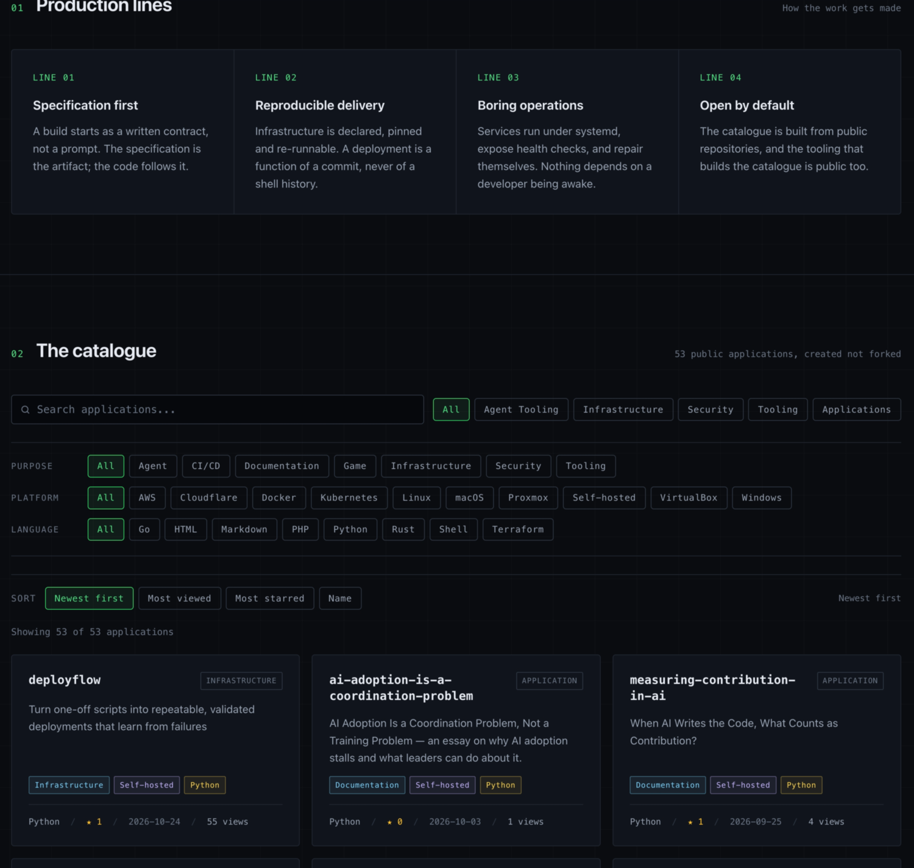

Repo Showcase¶
A catalogue page for everything you shipped, set up by asking an agent for it.
Live at: https://bruj0.net/

One deployment with 53 repositories. The sample this repository ships has six.
Every public repository you own is a finished argument that almost nobody can find. GitHub sorts your profile by last push, and each entry is a name, a language, and one line of description. Nothing there says what the project does, what it runs on, or whether it is finished.
Repo Showcase turns the same account into a page that answers those questions: one card per repository, filters for what it does and where it runs, and four ways to sort. It is static HTML rendered by Astro and published to GitHub Pages or Cloudflare Pages, so there is no server, no database, and no call to GitHub at runtime. The catalogue is a JSON file you commit, which means every change to the page arrives as a reviewable diff.
The stack¶
| Piece | Choice | What it buys |
|---|---|---|
| Generator | Astro 7, static output | One HTML file, one stylesheet, one icon |
| Host | Cloudflare Pages, GitHub Pages, or both | A key in the config decides; no code changes |
| Data | A JSON snapshot committed to the repo | Builds need no network; every catalogue change is a reviewable diff |
| Filtering | Plain JavaScript in the page | No framework runtime and no bundle to audit |
| Server | none | Nothing to patch, restart or pay for |
| Database | none | Nothing to back up, migrate or leak |
| Config | site.config.json |
One file decides brand, account, rules, host and domains |
| Build | Node 22 or later | One command, no network |
| Licence | MIT | Fork it and change the brand |
Measured on a catalogue of 53 repositories: three files, 110 KB. The catalogue is inlined into the page for search, so filtering makes no network request.
What it does
- Search, filters for purpose, platform and language, and four sort modes, all applied in the browser.
- Renders the full catalogue into the HTML. JavaScript filters it; it does not build it, so the page still reads with scripts blocked.
- Makes no third-party request: no web fonts, no analytics, no CDN script. The only external URLs are the ones the page links to.
- Publishes to one host or both, chosen by
deploy.targets.
What it deliberately does not do
- No login, comments, telemetry or contact form. Each one adds a server or a third party, which is the cost this design exists to avoid.
- No server rendering and no API routes. Static output only.
Why you would use it¶
| You have | You get |
|---|---|
| Forty repositories and no index of them | One page, filterable by purpose, platform and language |
| A CV that claims breadth | A page that shows it, with links that resolve |
| No appetite for another service to run | Static files, no server and no database |
| A catalogue that goes stale | npm run refresh rewrites the data as a diff you can read |
A domain is optional and so is Cloudflare. Without either, the site publishes to GitHub Pages. See Where it publishes.
Why it is built around an agent¶
Most site generators ask you to learn their config format. This one asks you to describe what you want, in a sentence.
| You say | It writes |
|---|---|
| "Drop anything with no stars and fewer than ten files." | catalogue.unnoticed = { maxStars: 0, maxViews: 0, maxFiles: 10 } |
| "Sort them by stars." | sort.default = "stars" |
| "Point this at my account." | githubOwner, and the brand strings that use {githubOwner} |
| "Only these repositories belong." | catalogue.include = [...] |
The division is deliberate: judgement belongs in prose, determinism belongs in scripts. The agent decides what you meant and writes one key. The scripts read that key and never guess. No line of code decides which repositories are yours, which is why the same tree publishes a catalogue of 53 for one account and a catalogue of one for another without a source change.
Seven skills in .agents/skills/ carry the procedure, and site-launch
sequences the other six. It asks the five questions only you can answer — which
account, what the site is called, which repositories belong, a domain or a
*.pages.dev subdomain, and whether to mint a token or paste one — then hands
control back wherever a credential or a browser is needed, and resumes where it
stopped.
Each skill ends by checking its own work. site-identity greps the build for
the name you are leaving behind. catalogue-curate reports the counts its rules
produced. site-deploy fetches the URL and looks for the catalogue before it
says "published". A skill that cannot check itself is a prompt, not a skill.
site.config.json your site: name, brand, account, domains, sort order
catalogue/tags.json purpose, platform and language for each repository
catalogue/excluded.json what the rules left out, and why
src/data/repos.json the catalogue snapshot the page renders
.agents/skills/ seven skills that edit the four files above
What you must supply¶
| You need | Why | Without it |
|---|---|---|
| A GitHub account | The catalogue is built from its public repositories, and GitHub Pages hosts the site | Nothing to list, and nowhere to publish |
| Node 22 or later | The build and the scripts | Nothing runs |
| A Cloudflare account | Optional. A second host, with a CDN and preview deployments | You publish to GitHub Pages only |
| A domain | Optional. Your own address instead of *.github.io |
The site lives at <owner>.github.io/<repo>/ |
Where it publishes¶
Two hosts are supported and the config decides which ones are used.
| Mode | Served at | Needs |
|---|---|---|
| GitHub Pages, no domain | <owner>.github.io/<repo>/ |
a GitHub account, nothing else |
| GitHub Pages, custom domain | your domain, at its root | a GitHub account and a domain |
| Cloudflare Pages, no domain | <projectName>.pages.dev |
a Cloudflare account |
| Cloudflare Pages, custom domain | your domain | a Cloudflare account and a domain |
The shipped site.config.json uses the first mode, so npm run deploy works
with nothing configured. Enabling a second host is a change to
deploy.targets, not a change to any script.
An agent will ask before enabling Cloudflare, and will never ask you to paste a
secret into the conversation: the token goes in .env, and
npm run secrets:check reports whether it is there without printing it.
Quickstart¶
npm install
# 1. Say who the site is for
$EDITOR site.config.json # githubOwner, brand.name, projectName
# 2. Pull the catalogue
# Optional GITHUB_TOKEN raises the rate limit and enables view counts.
GITHUB_TOKEN=$(gh auth token) npm run refresh
# 3. Look at it
npm run dev
# 4. Publish
npm run deploy # to <owner>.github.io/<repo>/
Steps 1 to 4 need a GitHub account and nothing else. Cloudflare is an opt-in that adds a host; it never becomes a requirement for the first publish.
The skill path¶
The four data files are meant to be edited by an agent, not by hand. The
skills in .agents/skills/ read and write them, and each one states how to
check its own work:
| Skill | Trigger it with |
|---|---|
site-launch |
"set this up", "publish my repositories" |
site-identity |
"rename the site", "point this at my account" |
catalogue-curate |
"which repos belong", "drop the empty ones" |
catalogue-tag |
"tag my repos", "categorise by purpose" |
catalogue-sort |
"sort by stars", "newest first" |
catalogue-audit |
"which repos need a README" |
site-deploy |
"deploy", "publish this", "set up the domain" |
site-launch sequences the other six and stops wherever a person has to act:
creating a token in the Cloudflare dashboard, deleting a forwarding rule,
waiting for a certificate, creating a throwaway repository.
Both Claude Code and VS Code read .agents/skills/ as-is; no plugin is
installed and no config is written.
Commands¶
| Command | Does |
|---|---|
npm run dev |
Local dev server |
npm run build |
Static build to dist/ |
npm run preview |
Serve the build |
npm run refresh |
Re-fetch the catalogue from GitHub into src/data/repos.json |
npm run check:config |
Prove the JavaScript and Python config loaders agree |
npm run cf:setup |
One-time: create the Pages project, mint or accept a deploy token |
npm run deploy |
Build and publish |
npm run compare:sites <a> <b> |
Report how two builds or two live sites differ |
Every script in scripts/ also accepts --json and --dry-run, so an agent
can ask what a command would do before it does it.
The published documentation¶
The documentation is published at
bruj0.github.io/reposhowcase, built
with MkDocs Material and deployed to the gh-pages branch by
.github/workflows/docs.yml.
The landing page is the long-form essay — the account of how this project was researched, planned and built. The rest of the site is this README, Deployment and Hosting:
| Page | Source |
|---|---|
/ (essay) |
essay/index.md, generated from the author's personal-docs |
/readme/ |
README.md |
/deployment/ |
docs/deployment.md |
/hosting/ |
docs/hosting.md |
npm run docs:assemble copies those four documents into site_src/, which is
what MkDocs reads. The staging step exists because MkDocs copies everything
under docs_dir into the site, so pointing it at the repository root would
publish node_modules/ and dist/. Nothing is edited under site_src/.
The essay has a canonical copy outside this repository, so its page is generated rather than hand-edited:
node scripts/sync-essay.mjs # regenerate essay/index.md
node scripts/sync-essay.mjs --check # exit 1 when the copy has drifted
npm run docs:assemble # rebuild site_src/
ESSAY_SOURCE overrides the canonical path. To build the site locally:
uv venv .venv --python 3.12
uv pip install --python .venv/bin/python -r requirements-docs.txt
npm run docs:assemble
.venv/bin/mkdocs build --strict --site-dir _site # or: .venv/bin/mkdocs serve
The sample catalogue¶
src/data/repos.json ships with six public repositories — Ansible,
Kubernetes, Hugo, Oh My Zsh, mdBook and Composer. They are not the author's
and they are not endorsed by this project: they are there so the page renders
with real content on the first build. npm run refresh replaces the file with
your own repositories.
Until you run it, the site says so, in the lede and in the eyebrow.
Credentials¶
Nothing secret is committed. .env is gitignored; .env.example lists every
key and says which step writes it.
| Key | Written by | Used by |
|---|---|---|
cloudflare_admin_api_token |
you, by hand, once | cf:setup only, and only when minting |
CLOUDFLARE_API_TOKEN |
cf:setup |
deploy |
CLOUDFLARE_ACCOUNT_ID |
cf:setup |
both |
GITHUB_TOKEN |
you, by hand | refresh |
Two ways to get a deploy token, and the README cannot pick for you:
- Mint one. Needs an admin token with
Account API Tokens: Write. Narrower at the end, but you have to create a privileged credential first. - Paste one. Create a token with
Cloudflare Pages: Editin the dashboard and paste it.cf:setup --no-mintaccepts it and skips the admin token entirely.
A pasted token cannot edit DNS. If you asked for a custom domain, cf:setup
prints the CNAME each hostname needs and leaves it to you, rather than
pretending to have made it.
Requirements that are not obvious¶
- Cloudflare Pages is deployed by Direct Upload, not by Git integration. The Git integration needs a browser OAuth grant and repository read access, and it is a one-way door once chosen.
- A custom domain needs DNS permission on the exact zone.
Zone Readlists zones; it does not read or write records. The deploy token is scoped to the zone ids the setup step discovered. - Page Rules are closed to account-owned API tokens. If a rule redirects
your hostname, no API call in this repository can remove it.
cf:setupdetects the redirect and stops. projectNameis both the Pages project and its*.pages.devsubdomain. Change it before the first deploy. Renaming later leaves the old project and its hostname behind in the account, because nothing deletes what it did not create.
Licence¶
MIT. See LICENSE.